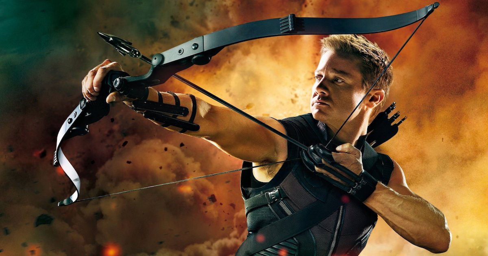
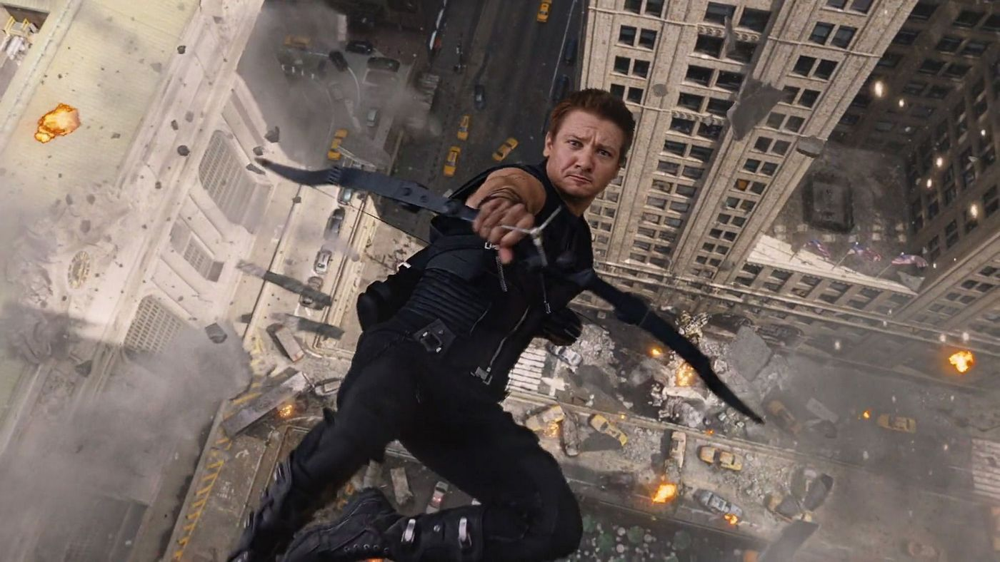

Nom:Barton
Prénoms:Clinton Francis « Clint »
Naissance:Waverly (Iowa)
Mensurations : 1,91 mètres
Parents: Orphelin dès l'enfance, ses parents étaient Edith et Harold Barton.
La naissance de Hawkeye
Très tôt, le jeune Clint développa un talent unique de tireur d'élite, principalement avec un arc et des flèches et fut renommé comme le « plus grand tireur d'élite de la planète ».. Barton ne finit jamais ses études au lycée pour des raisons inconnues. Il fut trié sur le volet par Nick Fury pour ses qualités de leadership, ses prouesses stratégiques, ses compétences au combat et sa tendance à toujours faire qu'il lui semble juste même quand cela l'amène à se mettre à dos ses supérieurs. Barton devint rapidement un des plus grands agents du S.H.I.E.L.D.. Il a la capacité de reconnaître le potentiel des personnes qu'il rencontre et c'est même dans ce cadre que naitrait entre lui et Natasha Romanoff connue sous le nom de « la veuve noire » une grande histoire d'amitié Barton rencontra une femme nommée Laura et ils formèrent une relation romantique ensemble. Finalement, Barton se maria à Laura et ils finiront par avoir trois enfants. De tous ses associés, seuls Fury et Natasha avaient connaissances de sa relation avec Laura et ses enfants qui ne figuraient sur aucuns des dossiers du S.H.I.E.L.D. Hawkeye est reconnu pour mener à bien ses missions et son sens de la morale.
Hawkeye, l'une des premières recrues des Avengers
 Hawkeye est sans doute le moins connu des Avengers. En effet, il tient à faire une distinction entre sa vie privée et sa vie de super-héros. Mais son niveau de popularité ne l'empêche pas d'etre efficace. Bien au contraire....Il rejoint les Avengers dans les années 60. Dans l’équipe, ses rapports sont parfois houleux avec Vif Argent et Captain America, dont il accepte mal les ordres. Il quitte d’ailleurs plusieurs fois la bande pour travailler en solo. Mais y revient toujours.Plusieurs de ses actions montrent son attachement à ses camarades super-héros. Il n'hésite pas à passer à l'action. L'un de ses actes les plus significatifs a été de protéger ses coéquipiers dans dans sa ferme familiale cachée située dans le Missouri lorsque ceux-ci risquaient la mort. Même si ses relations n'étaient pas au beau fixe avec Captain America, il a appris auprès de celui-ci une grande maitrise des arts martiaux.
Agilité et précision
Hawkeye est connu sous plusieurs identités notamment Ronin,. Mais s'il y a une chose qui nous permet de le reconnaîtresans hésitation c'est bien son arc et ses flèches qu'il brandit fièrement. Son excellente vision contribue à faire lui un archer hors-pair, capable de tirs d’une grande précision sur de très longues distances. Certaines des flèches qu’il décoche sont composées de substances dangereures et toxiques. Gare aux vilains...
Voici une petite compilation montrant notre héros au combat
Pour acheter vos articles de super-fan...
De nombreux magasins sont disponibles en ligne et un peu partout dans le monde. Si vous êtes dans l'Hexagone, nous avons repertorié quelques bons-plans pour vous :)